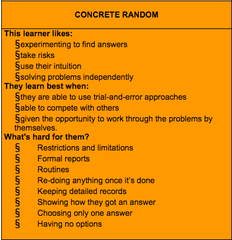

The Effort for Presence
Open-minded Learning
My experience to date in Phase 0 has been a whirlwind of activity, learning and emotion. I have acknowledged a see-saw of mindset flucuations from fixed to growth and back again. And I have maintained a determination; a resolve, to address the impediments of the fixed mindset towards achieving my goal of learning to learn, to fulfill my potential through a commitment to the affirmations of the growth mindset. I readily see the benefit of the growth versus fixed mindset but have spent too much time exposed to the fixed mindset.
I think most children start out with a growth mindset. They possess a curiosity and an interest in understanding the world they live in. But then they become inhibited as they get older by the constraints and expectations placed on them by school, home, community, age, gender, and culture. Eventually you find yourself outside the growth mindset and need to find the way back. This has been my experience and what I have struggled with in Phase 0. Staying in the growth mindset. 
My Gregoric test results confirmed what I anticipated. I have a predominantly 'concrete random' thinking style with a fairly equal distribution in the other three thinking styles. The associated traits for CR are accurate (see photo), and a good resource and guide to developing my learning skills at DBC. CR and growth mindset will provide me with the tools to get rid of bad habits and focus on embracing challenges, learning from and not fearing failure, while benefiting from and providing healthy feedback. My goal is to be open-minded and present in the devbootcamp experience which will solidify the programming competencies and strengthen peer collaboration and support.